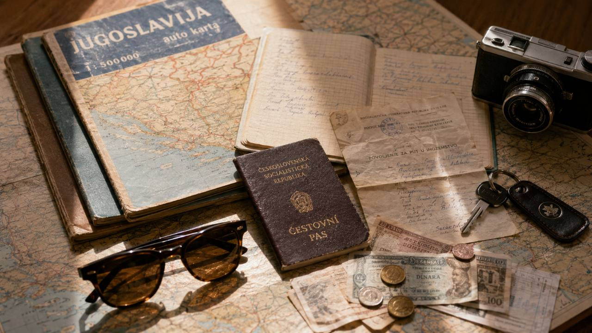
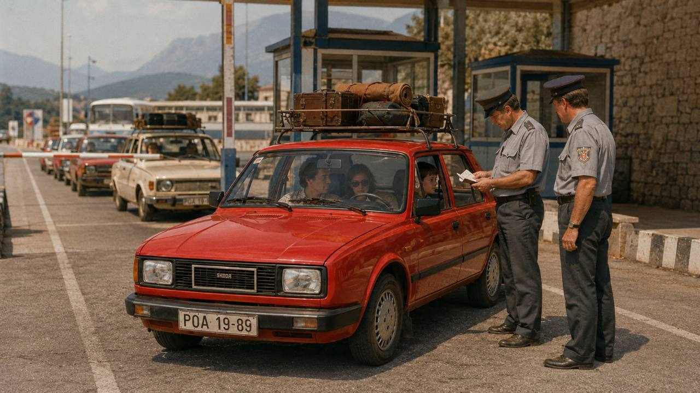
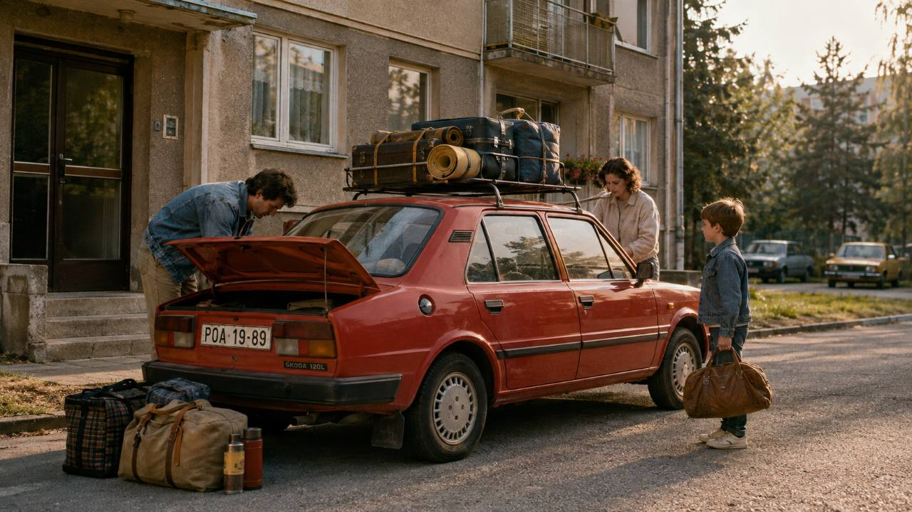
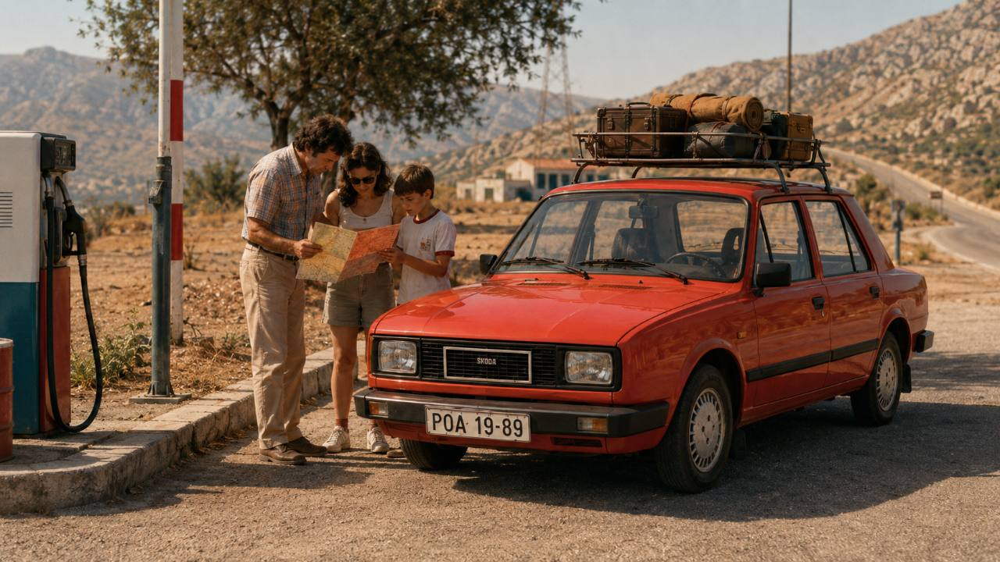
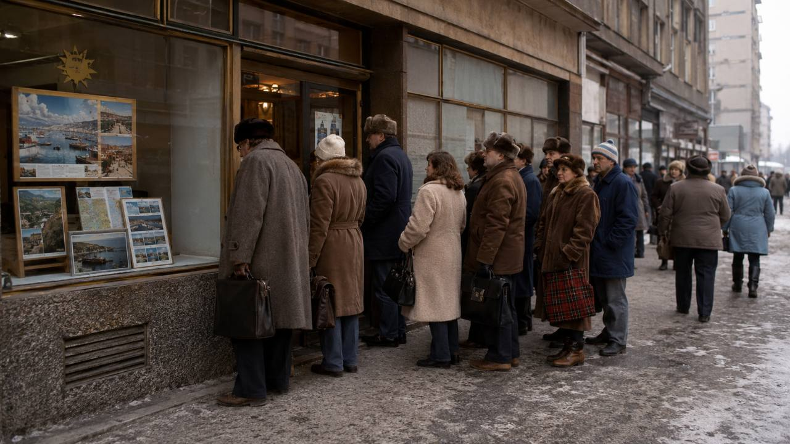
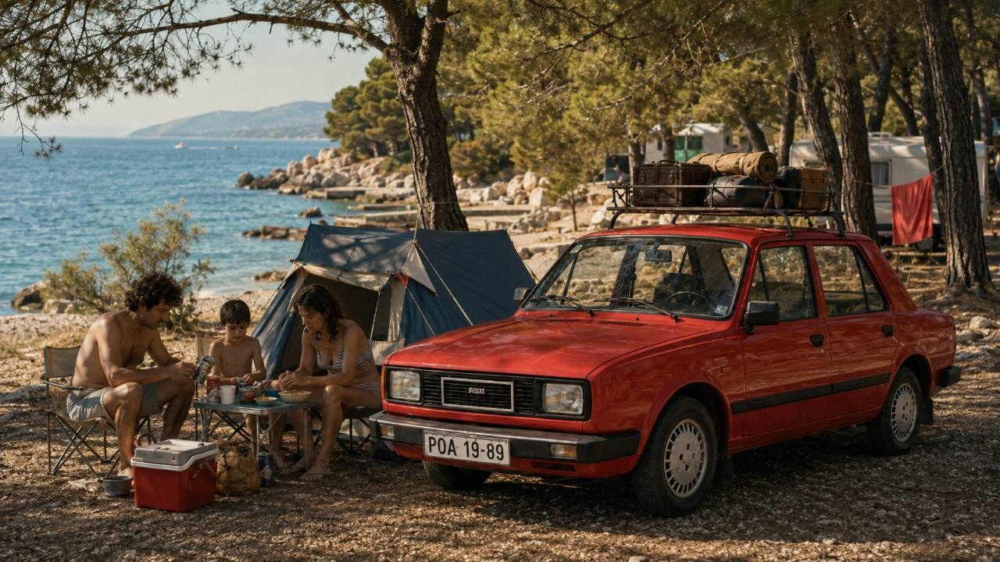
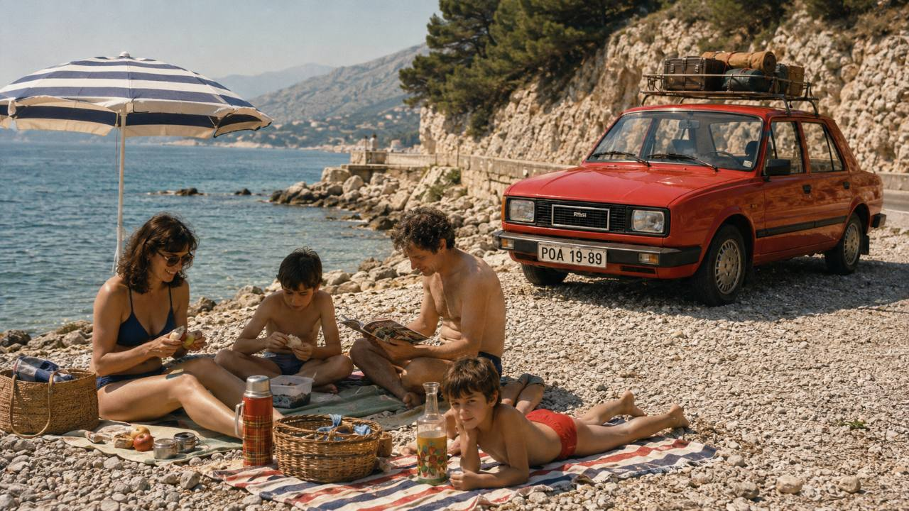

Predstavte si, že chcete stráviť leto pri Jadrane. Vyberiete si Chorvátsko, zarezervujete apartmán, sadnete do auta a idete.
V socialistickom Československu mohol byť postup presne opačný.
Najskôr ste zisťovali, či vám štát vôbec dovolí vycestovať. Potom či vám banka dovolí kúpiť cudziu menu. Následne ste mohli potrebovať súhlas zamestnávateľa, školy alebo ďalších úradov. Až potom malo význam rozmýšľať, kde budete bývať.
Cestovný pas sám osebe nemusel znamenať právo opustiť republiku. Pri cestách do Juhoslávie a najmä do takzvaných kapitalistických krajín bola kľúčová výjazdná doložka – štátne povolenie na konkrétnu cestu.
Jadran bol oveľa viac než len dovolenka
Pre Čechov a Slovákov malo pobrežie Jadranu osobitné čaro už dávno pred socializmom. Tradícia ciest na územie dnešného Chorvátska a Slovinska siaha hlboko do obdobia pred druhou svetovou vojnou.
Po roku 1948 sa však situácia dramaticky zmenila.
Keď Čedok v roku 1954 obnovil zahraničné zájazdy, dovolenkári smerovali predovšetkým do krajín sovietskeho bloku. Najvýznamnejšou prímorskou destináciou sa stalo Bulharsko pri Čiernom mori. Cesty do Juhoslávie boli spočiatku výrazne obmedzené.
V druhej polovici 60. rokov sa režim uvoľňoval. Českoslováci začali vo väčšom cestovať nielen do Juhoslávie, ale objavovali sa aj zájazdy do Rakúska, Talianska či Francúzska. Po okupácii Československa v auguste 1968 a nástupe normalizácie sa však hranice opäť výrazne privreli.
Juhoslávia bola pritom zvláštny prípad. Bola socialistická, ale nepatrila do sovietskeho bloku a jej hranice smerom na Západ neboli uzavreté železnou oponou ako československé.
A práve toho sa vedenie Československa obávalo.
Pas nestačil. Potrebovali ste povolenie opustiť vlastnú krajinu
Pre dnešného dvadsaťročného cestovateľa je asi najťažšie predstaviteľné práve toto.
Štát nevydával iba doklad totožnosti. Kontroloval tiež, či konkrétnemu občanovi dovolí konkrétnu cestu.
Po sprísnení pravidiel v roku 1969 bolo pri cestách do Juhoslávie a kapitalistických štátov potrebné získať výjazdnú doložku. Pri vybavovaní mohlo byť potrebné stanovisko zamestnávateľa, školy či národného výboru. U mužov v brannom veku vstupovala do procesu aj vojenská správa. Pri cestách na Západ sa v určitých obdobiach vyžadoval aj výpis z registra trestov.
Výjazdná doložka navyše mohla určovať, do ktorých krajín, na koľko ciest a na aký čas smie človek vycestovať.
To znamenalo, že pas vo vrecku ešte nebol vstupenkou do sveta.
Štát vám mohol jednoducho povedať: nie.

A teraz ešte získajte peniaze
Druhým slovom, ktoré dnešnej generácii znie takmer absurdne, je devízový prísľub.
Neboli to peniaze zadarmo.
Bol to súhlas Štátnej banky československej, že si občan smie za československé koruny kúpiť stanovené množstvo cudzej meny.
Ani vlastné úspory teda automaticky neznamenali, že si človek mohol nakúpiť toľko talianskych lír, západonemeckých mariek či inej meny, koľko chcel. Devízy boli pre socialistickú ekonomiku nedostatkovým tovarom a štát ich prideľoval.
Pri Juhoslávii bola situácia postupne miernejšia. Dinárov malo Československo vďaka osobitnému systému vzájomného obchodného zúčtovania viac a devízový prísľub do Juhoslávie bolo preto jednoduchšie získať než devízy na cestu do klasickej západnej krajiny.
V roku 1970 však dokonca platilo, že záujemca o cestu do Juhoslávie mohol o devízový prísľub žiadať za podmienky, že ho počas predchádzajúcich troch rokov nedostal. Toto obmedzenie bolo od roku 1974 odstránené a počet československých turistov na Jadrane opäť prudko rástol.
Niekedy rozhodoval aj váš zamestnávateľ
Predstavte si dnešnú situáciu:
„Šéf, v júli idem na Krétu.“
„Nesúhlasím. Nikam nejdeš.“
A nejde iba o dovolenku v práci. Ide o to, že bez jeho potvrdenia by ste nemuseli dostať doklady potrebné na opustenie republiky.
Presne takýto princíp bol súčasťou cestovania za normalizácie. Žiadosť o výjazdnú doložku alebo devízový prísľub prechádzala systémom hodnotenia, v ktorom zohrávala úlohu pracovná organizácia, škola a štátne orgány. Historické dokumenty dokonca hovoria o politických a „triednych“ kritériách pri posudzovaní žiadateľov o devízy.
Nebola to teda iba otázka toho, či si dovolenku môžete dovoliť.
Otázkou bolo aj to, či vám ju dovolí systém.
Juhoslávia: okno do iného sveta
Práve preto mala dovolenka v Juhoslávii zvláštne postavenie.
Jadranské pobrežie ponúkalo teplé more, letoviská, reštaurácie a atmosféru, ktorá sa mnohým návštevníkom z Československa zdala podstatne západnejšia než doma.
Zároveň bola odtiaľ cesta do Rakúska alebo Talianska reálne možná.
Komunistické vedenie preto v Juhoslávii nevidelo iba turistickú destináciu, ale aj potenciálnu cestu k emigrácii. Po liberalizácii 60. rokov nasledovalo v roku 1969 výrazné obmedzenie cestovania. Počet československých návštevníkov Juhoslávie klesol podľa historického výskumu z približne 284-tisíc v roku 1969 na 96-tisíc v roku 1970.
Neskôr sa pomery opäť zlepšili. V roku 1974 pricestovalo do Juhoslávie takmer 239-tisíc československých rekreantov a v roku 1975 už vyše 303-tisíc.
Jadran sa postupne stal jedným zo symbolov zahraničnej dovolenky.

Autom k moru? Pripravte sa na dobrodružstvo
Dnes sa zo Slovenska vyrazí cez Rakúsko a Slovinsko a po diaľniciach ste za niekoľko hodín v Chorvátsku.
V určitých obdobiach normalizácie bola takáto cesta pre československého turistu problém.

Turisti smerujúci do Juhoslávie nemohli jednoducho použiť pohodlný tranzit cez Rakúsko a cestovali cez Maďarsko. Historické pramene zachytávajú aj opačný absurdný príklad: cestujúci smerujúci do Bulharska nemohli použiť kratšiu trasu cez Juhosláviu a museli pokračovať Rumunskom.

A potom tu boli samotné autá, cesty bez dnešnej siete diaľnic a dlhé presuny.
Pamätníci opisujú cestu k moru rozdelenú pokojne na dva či tri dni, nocovanie v stane a auto naložené batožinou a potravinami. Takéto osobné spomienky treba odlišovať od všeobecne platných pravidiel, dobre však ilustrujú praktickú stránku individuálnej dovolenky.
Autobus, vlak alebo lietadlo
Veľkú úlohu zohrávali cestovné kancelárie.
Najznámejší bol Čedok, ale nebol jediný. Organizovaný zájazd riešil časť administratívy, dopravu, ubytovanie a devízové zabezpečenie, čo bolo v systéme plnom obmedzení veľkou výhodou.
K moru sa cestovalo autokarmi, vlakmi, individuálne automobilmi a pri drahších zájazdoch aj lietadlami.
Podľa spomienok dlhoročného pracovníka Čedoku stál na konci 70. rokov dvojtýždňový autokarový zájazd do Juhoslávie približne 3 000 Kčs a letecký okolo 5 000 Kčs. Ide o pamätnícky údaj z jedného zdroja, nie o univerzálny cenník, ceny záviseli od konkrétneho pobytu.
Letecká dovolenka pri Jadrane preto rozhodne nebola obdobou dnešného lacného letu za 30 eur.
Najskôr si však bolo treba zájazd vôbec kúpiť
Ani keď mal človek peniaze, nemusel dostať miesto.
Ponuka zahraničných zájazdov bola obmedzená a pri atraktívnych destináciách mohol dopyt výrazne prevyšovať počet dostupných miest.
Bývalý pracovník Čedoku Svatopluk Rada spomína, že pred začiatkom predaja zahraničných zájazdov sa pred pobočkami tvorili rady a ľudia niekedy čakali už deň vopred. Medzi ľuďmi sa podľa jeho spomienky dokonca hovorilo, že „Mikuláš nosí zájazdy od Čedoku“, pretože predaj na ďalšiu sezónu sa spájal so začiatkom decembra.
Dnes refreshujete Booking.
Vtedy ste mohli nocovať vo fronte pred cestovnou kanceláriou.

Hotel? Často radšej stan alebo chatka
Dnešná predstava stredomorskej dovolenky je klimatizovaný apartmán, hotelový bazén a raňajky formou bufetu.
Socialistická turistika mala často podstatne skromnejšiu podobu.
Čedok počas normalizácie rozvíjal lacné pobyty v vopred postavených stanoch a drevených chatkách, často v rámci podnikovej alebo odborárskej rekreácie podporovanej zamestnávateľom.
Pri individuálnych cestách bol autokemp prirodzenou voľbou aj preto, že turistovi zostávalo po výmene obmedzeného množstva devíz málo peňazí na drahšie ubytovanie a stravovanie.

Auto plné jedla nebola iba legenda
Paštéty, konzervy, instantné jedlá, chlieb či doma pripravené rezne patria k najčastejším spomienkam na socialistické cesty k moru.
Dôvod nebol iba gastronomický.
Každé minuté dináre alebo západné valuty znamenali menej peňazí na ďalšie výdavky či na veci, ktoré si ľudia chceli priviezť domov.
Jedna autentická spomienka na cestu do Juhoslávie v roku 1985 opisuje auto „úplne nacpané jedlom“ a nakupovanie iba základných potravín na mieste. Takéto svedectvo samozrejme nemožno preniesť na každú československú rodinu, ale podobný spôsob šetrenia je v dobových spomienkach veľmi častý.

Valuty v zubnej paste
A potom je tu kapitola, ktorá znie takmer ako film.
Oficiálne množstvo devíz bolo obmedzené. Časť cestujúcich preto zháňala zahraničné peniaze neoficiálne a snažila sa ich preniesť cez hranice.
Bývalý pracovník Čedoku spomína bankovky ukrývané v zubnej paste, pracom prášku, knihách či konštrukcii autobusu. Iné historické spracovania opisujú podobné praktiky pri cestách do Juhoslávie.
Netreba z toho vytvárať legendu, že takto cestoval každý. Je to však veľmi výrečný obraz systému, v ktorom človek mohol mať našetrené peniaze, ale nemohol si ich jednoducho legálne zameniť za potrebnú cudziu menu.
A čo Taliansko, Francúzsko alebo Grécko?
Tu sa dostávame do úplne inej kategórie.
Juhoslávia bola komplikovaná, ale pre veľké množstvo ľudí postupne dostupná.
Cesta do klasickej „kapitalistickej cudziny“ bola oveľa náročnejšia. Taliansko alebo Francúzsko sa síce v ponukách cestovných kancelárií objavovali, no počty miest boli obmedzené a záujemca potreboval príslušné povolenia, devízové zabezpečenie a podľa krajiny aj vstupné vízum.
Začiatkom 70. rokov boli podmienky dokonca nastavené tak, že organizované zájazdy do kapitalistických štátov nesmeli byť kratšie ako 14 dní a boli orientované na podnikové kolektívy. Historický výskum upozorňuje, že systém tým v niektorých prípadoch prakticky znemožňoval, aby na rovnaký zájazd cestovala celá rodina.
Aj tieto pravidlá sa v ďalších rokoch menili, preto nemožno povedať, že rovnaký režim platil bez zmeny až do novembra 1989.
Sedem vecí, ktorým by dnešný mladý cestovateľ možno neveril
- Cestovný pas automaticky neznamenal, že môžete odísť z krajiny.
- O súkromnej dovolenke mohol spolurozhodovať váš zamestnávateľ alebo škola.
- Banka rozhodovala, či a koľko cudzej meny si môžete kúpiť.
- Do Juhoslávie ste v určitom období nemohli jednoducho prejsť najkratšou trasou cez Rakúsko.
- Atraktívny zahraničný zájazd mohol znamenať noc strávenú vo fronte pred cestovnou kanceláriou.
- Na dovolenku sa bežne nieslo veľké množstvo vlastného jedla, aby sa šetrili drahocenné devízy.
- Pri návrate štát kontroloval nielen to, odkiaľ prichádzate, ale aj či ste neprekročili povolenú dĺžku pobytu.
Hranica medzi dvoma svetmi
Možno práve preto majú ľudia, ktorí v 70. a 80. rokoch zažili svoju prvú dovolenku pri Jadrane, na tieto cesty také silné spomienky.
Nebola to iba pláž.
Bol to okamih, keď človek po hodinách jazdy, kontrolách a mesiacoch vybavovania prvýkrát uvidel more.
Pre niekoho znamenala Juhoslávia Makarskú, Istriu, ostrovy a kúpanie. Pre iného prvé stretnutie so svetom, ktorý vyzeral inak než Československo.
A pre režim predstavovala dokonca bezpečnostný problém.
Výjazdné doložky definitívne skončili 4. decembra 1989. Od toho dňa mohli československí občania opustiť republiku bez tohto osobitného povolenia štátu.
Dnes sa môžeme ráno rozhodnúť, že chceme vidieť Benátky, večer kúpiť letenku a na druhý deň odletieť.
Možno práve vtedy si najlepšie uvedomíme, že jedna z najväčších zmien v cestovaní za posledných desaťročí nebola klimatizácia v hoteloch, internet, lacné letenky ani navigácia v mobile.
Bola to sloboda rozhodnúť sa, kam chceme ísť – bez toho, aby sme sa najskôr museli štátu opýtať, či smieme.
Poznámka redakcie: Text je historický prieskum. Ilustračné vizuály slúžia na priblíženie dobovej atmosféry, nejde o autentické dobové fotografie.